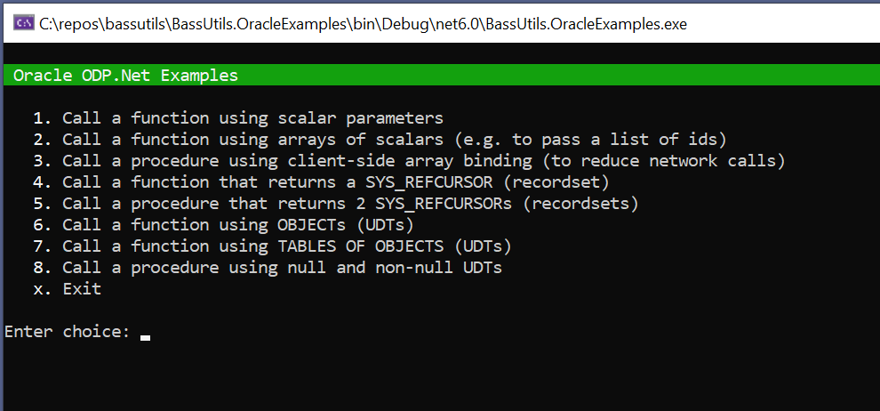

Oracle, eh?
My new job requires me to deal with Oracle for the first time in anger. I’ve found Oracle to be both impressive (PL/SQL is far more powerful than T-SQL) and frustrating. When things go wrong the error messages are often confusing, at best, and at worst positively misleading.
Most of my time has been spent trying to get data in and out of Oracle using C#, in particular I have been looking at doing bulk-loads of classes, in other words, how to get multiple records of data into and out of Oracle ergonomically. I didn’t want to use bulk-insert techniques because I wanted to avoid creating lots of staging tables. Instead I just wanted to pass a set of records into a stored procedure. My investigations were not helped by the fact that there are multiple, very similar, ways of doing things in Oracle, and it is quite possible to create stored procedures and data types in the Oracle server that you can’t call via the Oracle C# client library.
After much teeth gnashing, I have finally arrived at a set of techniques which allows me to pass a table of structured data to an Oracle stored procedure as a single parameter or get such a table back out again - in MS SQL server terms, it’s a Table Valued Parameter. This involves using Oracle User-Defined Data Types.
There are two alternative techniques which can also be used. Array Binding is a purely client-side technique which allows you to execute a SQL statement multiple times using a single network call. Associative Arrays are a a PL/SQL feature which you can call from C#, but you are limited to passing arrays of scalar types (ints, strings etc.)
NuGet Package and Examples Project
I have packaged up my lessons learned in a new NuGet package,
BassUtils.Oracle which contains
many helper methods for creating OracleParameters in the correct way - this is about 80%
of the battle. The remainder is knowing what you can and can’t do in PL/SQL and which is
compatible with calling it from C#, and I have documented what I have learnt so far in
the comments.
The package has a README, but I recommend cloning the
GitHub Repository
and walking through the BassUtils.OracleExamples project which shows how to use all 3
of the above techniques against a demo Oracle database - a SQL script to create the
database is included.

Hopefully these examples will help others avoid some of the torture I have experienced over the last few weeks :-).
If you don’t have access to a ‘play’ Oracle instance you can install Oracle using
Docker. Again, the CreateObjects.sql script has instructions for what you need to
do after you’ve pulled the Oracle image.
A Brief Taster
Let’s walk through passing a table of objects and an associative array to a function
and getting a table of objects back. This is copied directly from the
BassUtils.OracleExamples project, so if you cloned the project you can see it in
action.
First we define some schema-level types. Unfortunately they have to be schema-level to use UDTs from C#, that is one of the restrictions that are so frustrating.
CREATE TYPE objPerson AS OBJECT
(
Age INTEGER,
FirstName VARCHAR2(255),
LastName VARCHAR2(255),
Note VARCHAR2(255),
UpdatedDate DATE
);
-- Create a schema-level collection type (nested table type) of another schema-level type.
CREATE TYPE tblPerson AS TABLE OF objPerson;
Let’s also define an associative array type. These must be defined at package level:
CREATE PACKAGE COLLECTION_TYPES IS
...
TYPE arrNumber IS TABLE OF NUMBER INDEX BY BINARY_INTEGER;
...
END COLLECTION_TYPES;
Given the above we can define the following function. And this time it can be defined at schema-level or package level!
FUNCTION FunctionTakingTablesOfObjects
(
pPeople tblPerson,
pAgeMultipliers COLLECTION_TYPES.arrNumber
) RETURN tblPerson
AS
vPeople tblPerson := pPeople;
BEGIN
-- Extend the table by 1 element so that we can add the extra person.
vPeople.EXTEND();
vPeople(vPeople.LAST) := NEW objPerson
(
Age => 19,
FirstName => 'Zaphod',
LastName => 'Beeblebrox',
Note => 'Galactic President',
UpdatedDate => SYSDATE
);
FOR idx IN vPeople.FIRST..vPeople.LAST LOOP
vPeople(idx).Age := vPeople(idx).Age * pAgeMultipliers(Idx);
vPeople(idx).LastName := UPPER(vPeople(idx).LastName);
END LOOP;
RETURN vPeople;
END;
Here the parameter pPeople is a table of objects (a TVP) and pAgeMultipliers is an
associative array - just an array of numbers. I arranged things in the C# such that when
this function is called there are enough age multipliers to multiply each of the people’s
ages.
Using BassUtils.Oracle helper methods, we can call this function like so:
using var conn = Db.MakeConnection();
using var cmd = conn.CreateCommand();
cmd.CommandType = CommandType.StoredProcedure;
cmd.CommandText = "DemoUser.MyPackage.FunctionTakingTablesOfObjects";
// The return parameter is a table of UDTs.
var returnParam = cmd.Parameters.AddReturnUdtArray("DemoUser.tblPerson");
// The first parameter is a table of PersonRecord. This is expressed in the special
// C# wrapper class that we had to write to tell Oracle how to serialize these things.
var people = new PersonRecordArray() { Rows = People.MakeFuturama() };
cmd.Parameters.AddUdtArray("pPeople", "DemoUser.tblPerson", people);
// The second parameter is an associative array of decimals, the type being declared in a package.
// This is the only way to pass an array of primitive scalars via ODP.Net.
cmd.Parameters.AddAssociativeArray("pAgeMultipliers", new[] { 1.0m, 1.1m, 1.2m, 4.4m });
The magic here is in the helper function AddReturnUdtArray, AddUdtArray and AddAssociativeArray
which do the heavy lifting of creating properly setup OracleParameter objects.
The comments in the code allude to a the C# classes PersonRecord and PersonRecordArray. The code
for these is too long to show here, but can be
seen in the repo.
This class is what Oracle ODP.Net uses to map to and from the objPerson and tblPerson types
we created in the SQL above. It’s very long-winded and mechanical (I guess the Oracle engineers never
heard of POCO) but I hope to write another NuGet package soon which will generate them from a DSL.
Final Thoughts
Like most things, it’s easy once you know how - and have captured that knowledge in a package
that simplifies the task. It’s probable that there are more techniques and helpers which could
be added to BassUtils.Oracle - I would welcome pull requests.
Well, a bit at least!